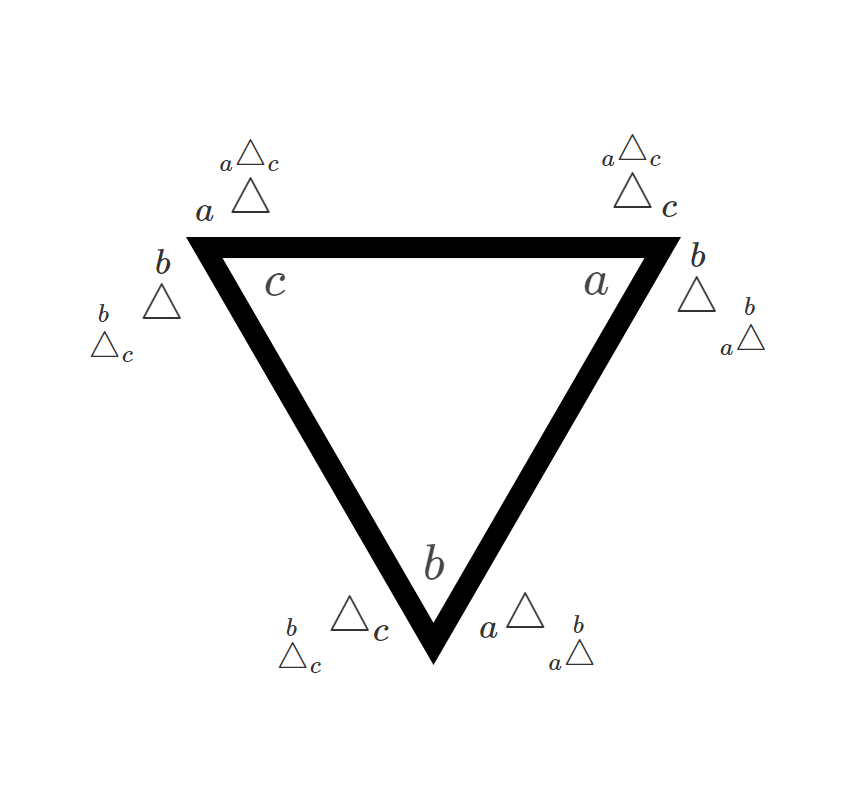

An Introduction to the Triangle of Power
Exponents, Logs, and Roots
There are three general ways to describe the following mathematical equality:
\[ \begin{gather*} \underbrace{\text{ }2 \times 2 \times 2}_\text{3} = 8 \\ \textit{(2 multiplied by itself 3 times equals 8)} \end{gather*} \]
- 2 multiplied by itself 3 times equals what? (answer is 8)
- what multiplied by itself 3 times equals 8? (answer is 2)
- multiply 2 by itself how many times to equal 8? (answer is 3)
or in matematical notation:
- Exponents \(2^3=8\)
- Logarithms \(\sqrt[3]8=2\)
- Roots \(\log_2(8) = 3\)
It is unfortunate that all three of these relationships use different notation types to represent the same truism that \(2\times2\times2=8\). Various websites and media have explored alternative ways to represent this relationship. The one explored in this article is the Triangle of Power.
The Triangle of Power… \(_{a}\stackrel{b}\triangle _{c}\)
Take the equation, \(2\times2\times2=8\). Using new notation, I will represent this relationship in a triad as so:
\[ \begin{align*} & _{2}\stackrel{3}\triangle _{8} \end{align*} \]
This means that I can represent each individual description (exponents, logs, and roots) as so:
\[ \begin{align*} & 2^3 = 8 & \Leftrightarrow {} \stackrel{3}{_2\triangle_{\phantom{c}}} = 8 \\ & \sqrt[3]{8} = 2 & \Leftrightarrow {} \stackrel{3}{_\phantom{a}\triangle_{8}} = 2\\ & \log_2\left(8\right) = 3 & \Leftrightarrow {} \stackrel{}{_2\triangle_{8}} = 3\\ \end{align*} \]
We can use this new notation with the variables \(a\), \(b\), and \(c\) to make this relationship more general.
\[ \begin{align*} & a^b = c & \Leftrightarrow {} \stackrel{b}{_a\triangle_{\phantom{c}}} = c \\ & \sqrt[b]{c} = a & \Leftrightarrow {} \stackrel{b}{_\phantom{a}\triangle_{c}} = a\\ & \log_a\left(c\right) = b & \Leftrightarrow {} \stackrel{}{_a\triangle_{c}} = b \end{align*} \]
Properties of these operators (in standard notation)
\(a\) remains constant
\[ \begin{align*} &\text{Properties of Logarithms} &\text{Properties of Exponents} \\\\ & \log_a(x\times y) = \log_a(x) + \log_b(x) & a^{x + y} = a^x \times a ^y \\\\ & \log_a(\frac{x}{y}) = \log_a(x) - \log_b(x) & a^{x - y} = \frac{a^x}{a^y} \end{align*} \]
\(b\) remains constant
\[ \begin{align*} &\text{Properties of Exponents} &\text{Properties of Roots} \\\\ & xy^b = x^b \times y^b & \sqrt[b]{x\times y} = \sqrt[b]{x} \times \sqrt[b]{y} \\\\ & \left(\frac{x}{y}\right)^b = \frac{x^b}{y^b} & \sqrt[b]{\frac{x}{y}} = \frac{\sqrt[b]{x}}{\sqrt[b]{y}} \end{align*} \]
\(c\) remains constant
\[ \begin{align*} &\text{Properties of Logarithms} &\text{Properties of Roots} \\\\ & \log_{x\times y}(c) = \left(\left(\log_xc\right)^{-1} + \left(\log_yc\right)^{-1}\right)^{-1} & \sqrt[(x^{-1}+ y^{-1})^{-1}]{c} = \sqrt[x]{c} \times \sqrt[y]{c} \\\\ & \log_{\frac{x}{y}}(c) = \left(\left(\log_xc\right)^{-1} - \left(\log_yc\right)^{-1}\right)^{-1} & \sqrt[(x^{-1}- y^{-1})^{-1}]{c} = \frac{\sqrt[x]{c}}{\sqrt[y]{c}} \end{align*} \]
Properties of these operators (in power triangle notation)
\(a\) remains constant
\[ \begin{align*} &\text{Properties of Logarithms} &\text{Properties of Exponents} \\\\ & _{a} \stackrel{\phantom{b}} \triangle _{xy} ={} _{a}\stackrel{\phantom{b}}\triangle _{x} +{} _{a}\stackrel{\phantom{b}}\triangle _{y} & _{a} \stackrel{x+y} \triangle _{\phantom{c}} ={} _{a}\stackrel{x}\triangle _{\phantom{c}} \times{} _{a}\stackrel{y}\triangle _{\phantom{c}} \\\\ &_{a} \stackrel{\phantom{b}} \triangle _{\frac{x}{y}} ={} _{a}\stackrel{\phantom{b}}\triangle _{x} -{} _{a}\stackrel{\phantom{b}}\triangle _{y} & _{a} \stackrel{x-y} \triangle _{\phantom{c}} ={} \frac {_{a}\stackrel{x}\triangle _{\phantom{c}}} {_{a}\stackrel{y}\triangle _{\phantom{c}}} \end{align*} \]
\(b\) remains constant
\[ \begin{align*} &\text{Properties of Exponents} &\text{Properties of Roots} \\\\ & _{x\times y} \stackrel{b} \triangle _{\phantom{c}} ={} _{x}\stackrel{b}\triangle _{} \times{} _{y}\stackrel{b}\triangle _{} & _{\phantom{a}} \stackrel{b} \triangle _{x\times y} ={} _{\phantom{x}}\stackrel{b}\triangle _{x} \times{} _{\phantom{x}}\stackrel{b}\triangle _{y} \\\\ &_{\frac{x}{y}} \stackrel{b} \triangle _{\phantom{c}} ={} \frac {_{x}\stackrel{b}\triangle _{\phantom{c}} } {_{y}\stackrel{b}\triangle _{\phantom{c}} } & _{\phantom{a}} \stackrel{b} \triangle _{\frac{x}{y}} = \frac {_{\phantom{a}}\stackrel{b}\triangle _{x}} {_{\phantom{a}}\stackrel{b}\triangle _{y}} \end{align*} \]
\(c\) remains constant
\[ \begin{align*} &\text{Properties of Logarithms} &\text{Properties of Roots} \\\\ & _{x\times y} \stackrel{\phantom{b}} \triangle _{c} ={} \left( \left( _{x}\stackrel{}\triangle _{c}\right)^{-1} +{} \left(_{y}\stackrel{}\triangle _{c}\right)^{-1} \right)^{-1} & _{\phantom{a}} \stackrel{ \left(x^{-1}+y^{-1}\right)^{-1} } \triangle _{c} ={} _{\phantom{x}}\stackrel{x}\triangle _{c} \times{} _{\phantom{x}}\stackrel{y}\triangle _{c} \\\\ & _{\frac{x}{y}} \stackrel{\phantom{b}} \triangle _{c} ={} \left( \left( _{x}\stackrel{}\triangle _{c}\right)^{-1} -{} \left(_{y}\stackrel{}\triangle _{c}\right)^{-1} \right)^{-1} & _{\phantom{a}} \stackrel{ \left(x^{-1}-y^{-1}\right)^{-1} } \triangle _{c} ={} \frac {_{\phantom{x}}\stackrel{x}\triangle _{c} } {_{\phantom{x}}\stackrel{y}\triangle _{c}} \end{align*} \]
Inverse identities
Inverse identities are as follows below:
\[ \begin{align*} a &= \sqrt[b]{a^b} &=\sqrt[log_a(c)]{c} \\\\ b &= \log_a(a^b) &=\log_{\sqrt[a]{c}}(c) \\\\ c &= (\sqrt[b]{c})^c &=a^{\log_a(c)} \\\\ \end{align*} \]
Inverse identities
Inverse identities are as follows below:
e.g. \(a = f(f^{-1}(a))\)
\[ \begin{align*} a &= \text{ } _{\phantom{a}} \stackrel{b} \triangle _{ _{a}\stackrel{b}\triangle _{\phantom{c}} } \text{ } &= \text{ } _{\phantom{a}} \stackrel{_{a}\stackrel{\phantom{b}}\triangle _{c}} \triangle _{c} \\\\ b &= \text{ } _{ _{\phantom{a}}\stackrel{b}\triangle _{c} } \stackrel{\phantom{b}} \triangle _{c} \text{ } &= \text{ } _{a} \stackrel{\phantom{b}} \triangle _{ _{a}\stackrel{b}\triangle _{\phantom{c}} } \\\\ c &= \text{ } _{ _{\phantom{a}}\stackrel{b}\triangle _{c} } \stackrel{b} \triangle _{\phantom{c}} \text{ } &= \text{ } _{a} \stackrel{ _{a}\stackrel{\phantom{b}}\triangle _{c} } \triangle _{\phantom{c}} \\\\ \end{align*} \]
The inverse identities above can be displayed as such in the chart below:

\(_{a}\stackrel{b}\triangle _{c}\)